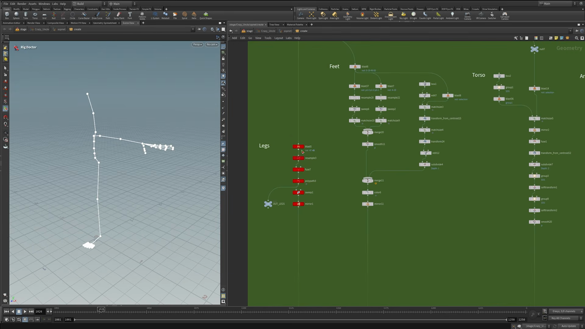
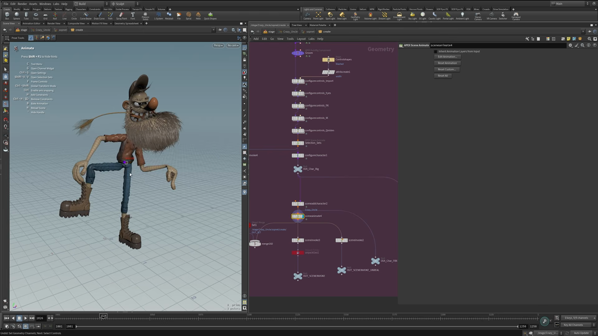

Houdini キャラクター制作コース（SideFX 公式）— 全体の構成とリグファーストの考え方
出典: Create a Procedural Character（SideFX 公式チュートリアル / 講師 Roy Kristoffersen・Qvisten Animation / Houdini 21 / 全10本 3時間06分 / 英語）。 このページは、上記のコースを見ながら自分用にまとめた日本語の学習メモです。SideFX 公式の翻訳ではありません。
このシリーズについて
| 項目 | 内容 |
|---|---|
| コース名 | Create a Procedural Character（Character Creation in Houdini） |
| 講師 | Roy Kristoffersen さん（Qvisten Animation / ノルウェー） |
| 対象バージョン | Houdini 21 |
| 難易度 | Intermediate |
| 本数 / 総尺 | 全10本 / 3時間06分 |
| 公開 | 2026-03-24 |
| 題材 | 「Crazy Uncle」というスタイライズドなキャラクター1体 |
何もない状態から、アニメーションできてレンダリングまで通る production-ready なキャラクターを1体仕上げるまでを、 モデリング・服・ブレンドシェイプ・グルーム・スキニング・リギング・ルックデブ・Unreal 連携まで通しで扱っています。 これらの工程が Houdini のプロシージャルな仕組みの中でひとつながりになっているところが、このコースの面白いところだと思います。
核になる考え方: リグファースト
シリーズ全体を貫いているのが Rig First（リグファースト）という進め方です。 一般的なキャラクター制作では「モデリング → リグ → スキニング」の順に進めることが多いと思いますが、 このコースではその順序を入れ替えます。
- まずプリリグ（ざっくりしたスケルトン）を作ります
- そのリグでプロシージャルモデリングを駆動します。リグを動かすとモデルの形が追従します
- 同じモデリング用リグをそのままスキニングと最終リグに再利用します
ポイントは 2 と 3 が同じリグを共有していることです。 モデリングのために作った仕組みが最後のアニメーション用リグまで一本でつながるので、 「モデルを直したのでリグを作り直し」という手戻りが起きにくくなります。

左のビューポートは Rig Doctor でプリリグを表示したところです。
右の SOP ネットワークは Feet / Legs / Torso / Arms と
部位ごとにブロック分けされていて、それぞれが sweep / resample / matchsize /
transform_from_centroid / mirror といったノードで組まれています。
このネットワークがプリリグの形に追従してくれます。
全10回の構成
| # | タイトル | 尺 | 扱う内容 |
|---|---|---|---|
| 0 | Introduction | 2:03 | コース全体の概要（この記事） |
| 1 | PreRig Modelling | 28:47 | プリリグを作って、それでモデルを肉付けする |
| 2 | Procedural Modeling Workflows | 48:17 | VDB・Quad Remesh・スカルプトツール。最長の回 |
| 3 | Cloth Modeling Workflows | 20:55 | 服のモデリング |
| 4 | Blendshapes | 18:46 | プロシージャルなブレンドシェイプ |
| 5 | Hair and Groom Workflow | 14:27 | 髪とグルームのセットアップ |
| 6 | KineFX Procedural Skinning | 16:55 | ウェイトを塗らずに済ませるスキニング |
| 7 | Control Rig Using APEX | 14:26 | APEX でコントロールリグを組む |
| 8 | Lighting and Rendering in Karma | 7:46 | Solaris でのルックデブとライティング |
| 9 | Unreal Integration | 13:28 | Unreal Engine への書き出しとアニメーション連携 |
最終的に組み上がるもの

最終形では APEX のネットワークがこのような形になります。
configurecontrols_Import から始まって、_Eyes / _FK / _IK / _Quirks と
コントロールの種類ごとにノードが並び、Selection_Sets と configurecharacter1 を経て
OUT_Char_Rig に出ています。そこから sceneaddcharacter → sceneanimate →
sceneinvoke と流れて、出力が OUT_Char_FBX と OUT_SCENEINVOKE_UNREAL の
2系統に分かれています。この2系統が第9回の Unreal 連携につながっていきます。
左のビューポートは Animate ステートでポーズを付けているところで、
Pose Tools のショートカット一覧が表示されている状態です。
用意しておくもの
- Houdini 21。APEX と KineFX を中心に使うので、バージョンの差はけっこう効いてきそうです
- SideFX のコースページから HIP ファイルがダウンロードできます（SideFX アカウントが必要です）
- 第9回だけ Unreal Engine が必要になります
このシリーズの日本語メモ
全10回ぶんのメモです。上から順に読めるようにしてあります。
| # | メモ | 主な内容 |
|---|---|---|
| 1 | プリリグを先に作ってモデルを駆動する | 点はジョイントである / Rig Doctor / VDB で統合 |
| 2 | VDB と Quad Remesher でプロシージャルにモデリングする | 指から爪を生やす / Point Deform / Sweep の断面 |
| 3 | 体から服を切り出してパネルとシワを作る | Labs Box Clip / UV シームでパネル分割 / Vellum ブラシ |
| 4 | 片側だけ彫れば済むプロシージャルなブレンドシェイプ | 命名規則 / ミラー用 VEX / 顔から作るスライダー |
| 5 | カーブとマスクでヒゲと髪をグルーミングする | Guide Advect / Guide Skin Attribute Lookup |
| 6 | ウェイトを塗らずに済ませる KineFX スキニング | Attribute Composite でキャプチャを重ねる |
| 7 | APEX AutoRig Builder でコントロールリグを組む | Pack Folder / groom の間引き / Component Catalog |
| 8 | Solaris と Karma でライティングしてレンダリングする | MaterialX で Cd を拾う / レイヤー分けレンダリング |
| 9 | APEX から Unreal Engine へ書き出す | Configure Clip Anim / groom_group_id |
シリーズを通して繰り返し出てくるもの
9本を通して見ると、同じ道具が形を変えて何度も出てきます。あとから読み返すときの手がかりとして挙げておきます。
| 道具 | どこで出てくるか |
|---|---|
Sweep の Apply Scale Along Curve | 脚・腕・指（2回）、ヒゲの房（5回）、舌（2回） |
curveu アトリビュート | 色のグラデーション（2・3回）、房の太さ（5回）、groom の width（7回） |
Point Deform | 爪への差分伝達（2回）、Vellum のシワの移し替え（3回） |
| VDB での統合とブーリアン | パーツの統合（1回）、爪と口の中（2回）、スキニング用プロキシ（6回） |
Attribute Paint → Attribute Blur → Attribute Remap | Vellum のブレンド（3回）、グルームのマスク（5回）、ブレンドシェイプのマスク（4回） |
Shrinkwrap + Remesh のプロキシ | 服の当たり（3回）、ヒゲ・歯・靴のスキニング（6回） |
訳語について
ノード名やパラメータ名は、Houdini の UI 表記に合わせて英語のままにしています
（Quad Remesh、Attach Skin、KineFX、APEX など）。
検索したときに公式ドキュメントや動画と突き合わせやすいほうがよいかなと思ってそうしました。
おことわり
このページは個人的な学習メモで、SideFX 公式の翻訳でも、SideFX に承認されたものでもありません。 内容は元動画が優先ですので、食い違いがあればそちらが正しいと思ってください。 元のコースは無料で公開されていますので、よろしければそちらもあわせてご覧ください。